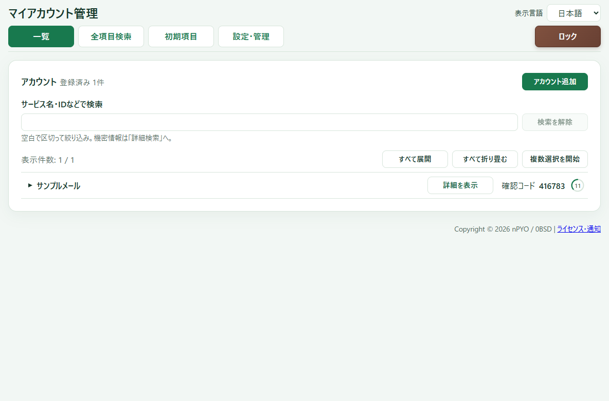
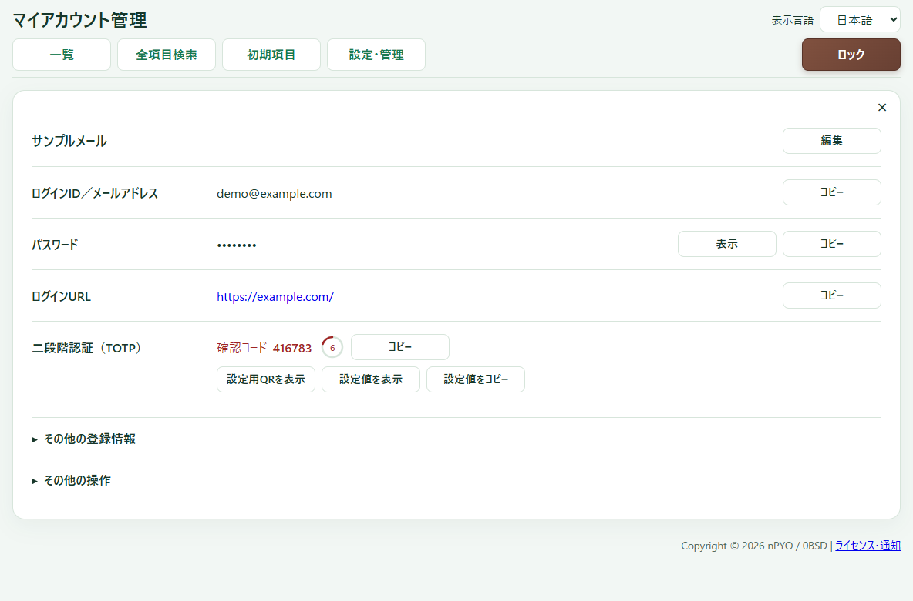

01はじめに・できること
登録したアカウントを一覧で探し、詳細で確認し、設定・管理で保護します。
手順一覧を開く（3手順）
1一覧：アカウントを探す
［一覧］には登録アカウントが並びます。検索・追加・概要の展開・詳細表示はここから始めます。

2詳細：確認・コピー・編集
一覧の［詳細を表示］を押すと登録内容を確認できます。パスワードは通常、伏字です。

3設定・管理：バックアップなど
［設定・管理］からバックアップ・復元・HTML出力や認証情報の管理へ進みます。